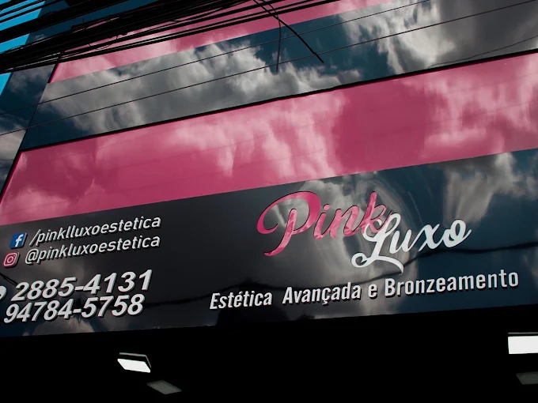

01
Simetria & Proporção Facial
Alinhamento harmonioso entre o terço superior, médio e inferior da face, corrigindo assimetrias naturais e valorizando a relação visual entre olhos, nariz, lábios e queixo.
Suavize os sinais do tempo e valorize os contornos do seu rosto com um tratamento personalizado.
OBJETIVOS CLÍNICOS E ESTÉTICOS
Muito além de tratar linhas isoladas, o foco é a harmonia global: proporção, sustentação e equilíbrio que respeitam sua identidade única.
Alinhamento harmonioso entre o terço superior, médio e inferior da face, corrigindo assimetrias naturais e valorizando a relação visual entre olhos, nariz, lábios e queixo.
Destaque refinado dos ângulos da mandíbula e projeção discreta do queixo, desenhando uma transição sutil e nítida entre o rosto e o pescoço, sem peso visual.
Restauração sutil do suporte malar e zigomático (maçãs do rosto), recuperando a convexidade jovem perdida com a reabsorção natural dos tecidos ao longo dos anos.
Atenuação calculada de rugas e vincos dinâmicos na fronte, glabela e olhos, preservando totalmente a mímica facial espontânea e o frescor de uma expressão descansada.
CASOS CLÍNICOS AUTÊNTICOS
Registros clínicos autorizados de pacientes atendidas na Pink Luxo. Cada procedimento é único, planejado a partir da anatomia e resposta biológica individual.
ANATOMIA FACIAL & POSSIBILIDADES
Cada área da face possui dinâmica e necessidades particulares. Conheça as regiões tratadas na clínica com rigor anatômico e absoluta naturalidade.
Cada ponto de aplicação é calculado milimetricamente para preservar a identidade e harmonia individual do seu rosto.
Suavização precisa das rugas dinâmicas na fronte, da marca de tensão entre as sobrancelhas ("cara de brava") e dos pés de galinha ao redor dos olhos, devolvendo um olhar descansado e luminoso sem congelar sua expressão natural.
Reposição estrutural do volume no terço médio da face, recuperando o ponto de luz e criando um efeito lifting sutil que suspende os tecidos e ameniza diretamente o sulco nasogeniano ("bigode chinês").
Estruturação da borda da mandíbula e alinhamento do queixo (mento) para desenhar uma transição nítida com o pescoço, reduzindo a sensação visual de flacidez e valorizando o perfil facial com alta elegância.
Definição do arco do cupido, hidratação profunda e restauração de volume labial proporcional, além de suavizar as linhas finas ao redor da boca ("código de barras"), sempre respeitando o formato e a anatomia da sua boca.
PROTOCOLO EXCLUSIVO PINK LUXO
Nenhum procedimento é padronizado. Cada plano de harmonização nasce de uma investigação minuciosa das proporções, tônus e dinâmica facial.
Compreendemos suas expectativas e realizamos o mapeamento anatômico completo da face em repouso e em movimento, avaliando simetrias, dinâmica muscular e vetores de sustentação.
Definimos com precisão milimétrica quais procedimentos e substâncias biocompatíveis são indicados para o seu perfil. Sem excessos, sem padronização artificial.
Aplicação rápida e segura no consultório com anestésico tópico potente e instrumental de alta precisão, garantindo máximo conforto e retorno imediato às atividades.
Orientação detalhada para o pós-procedimento e consulta de retorno agendada para avaliar a acomodação dos tecidos e certificar a perfeita simetria e naturalidade.
Rua Tijuco Preto, 426 — Tatuapé · São Paulo. Atendimentos planejados com intervalos adequados para sua total privacidade e tranquilidade.
A CLÍNICA NO TATUAPÉ
A Pink Luxo é uma clínica de estética avançada e harmonização facial projetada para unir precisão médica, discrição e uma experiência acolhedora.
Entendemos que cada rosto exige olhar artístico apurado e profundo domínio da anatomia humana. Por isso, trabalhamos exclusivamente com produtos biocompatíveis e reabsorvíveis homologados pela Anvisa, aplicados por profissionais altamente capacitadas.
Utilização estrita de produtos seguros com certificação e rastreabilidade total.
Tempo dedicado para esclarecer dúvidas e personalizar cada detalhe do plano.

EXPERIÊNCIA DAS PACIENTES
Avaliações verificadas de quem realizou tratamentos faciais na Pink Luxo e priorizou a naturalidade.
"Fiz a harmonização facial na Pink Luxo e ficou surreal de natural! Tinha muito receio de ficar com cara congelada ou diferente, mas meu rosto está leve, descansado e jovem."
"As marcas na testa e os pés de galinha me incomodavam muito. Após a avaliação, o plano foi super delicado. Todo mundo elogia dizendo que pareço mais serena. Clínica impecável!"
"Atendimento de altíssimo nível. A profissional me explicou cada passo e aplicou o anestésico com todo cuidado, não senti dor. O resultado respeitou totalmente meus traços originais."
"Ambiente discreto, equipe acolhedora e pontualidade. Me senti ouvida de verdade na consulta de avaliação. Indico para quem busca elegância e segurança."
"Muito prático para quem tem rotina corrida. Fiz a aplicação na hora do almoço e voltei ao trabalho normalmente. Em poucos dias vi o efeito completo e harmônico."
"O arqueamento suave da sobrancelha abriu meu olhar e tirou aquele aspecto cansado do final do dia. Um luxo de clínica e atenção aos mínimos detalhes."
LOCALIZAÇÃO & CONTATO
Fácil acesso, estacionamento nas proximidades e um espaço moderno e aconchegante para receber você.
Rua Tijuco Preto, 426 — Tatuapé
São Paulo · SP · CEP 03316-000
Segunda a Sexta · 9h às 19h
Sábados · 9h às 15h
ESCLARECIMENTOS FREQUENTES
Respostas claras com base no rigor técnico de nossa equipe para que você tome sua decisão com tranquilidade.
A harmonização facial é um conjunto de procedimentos minimamente invasivos e personalizados — combinando relaxamento da musculatura facial e preenchimentos biocompatíveis à base de ácido hialurônico. O objetivo é equilibrar volumes, definir contornos e suavizar rugas, preservando integralmente a identidade e a expressividade natural de cada pessoa.
Não. Na Pink Luxo priorizamos a técnica de harmonização natural. Todas as dosagens e pontos de aplicação são calculados respeitando a espessura da pele e a anatomia muscular de cada paciente. Você conquista um visual jovem, iluminado e descansado, sem rigidez ou perda dos movimentos espontâneos.
O procedimento é bastante confortável. Aplicamos um anestésico tópico de alta eficácia previamente à sessão e utilizamos microcânulas e microagulhas de precisão máxima. A maioria das pacientes relata apenas uma leve sensação de pressão ou picadinha momentânea, sendo um protocolo extremamente tranquilo.
No caso do relaxamento muscular, os primeiros sinais aparecem entre 48h e 72h, com consolidação total em até 14 a 15 dias. Os preenchimentos oferecem sustentação perceptível de imediato, que se acomoda com máxima naturalidade ao longo das duas primeiras semanas. A durabilidade média varia de 4 a 6 meses para relaxamento e de 10 a 18 meses para preenchimentos, dependendo do metabolismo individual.
Não é necessário afastamento. Como se trata de um procedimento não cirúrgico, você pode retornar à sua rotina diária no mesmo dia. Recomendamos apenas evitar esforço físico intenso, exposição solar direta ou massagens faciais vigorosas nas primeiras 24 horas.
Por determinação dos conselhos de saúde e ética profissional, valores e planos de tratamento são apresentados após o exame clínico presencial. Durante sua avaliação personalizada, a especialista analisa detalhadamente sua face e apresenta as melhores opções para o seu objetivo de forma transparente e acolhedora.